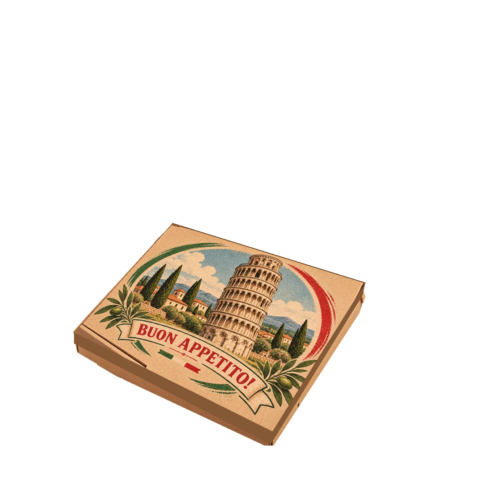
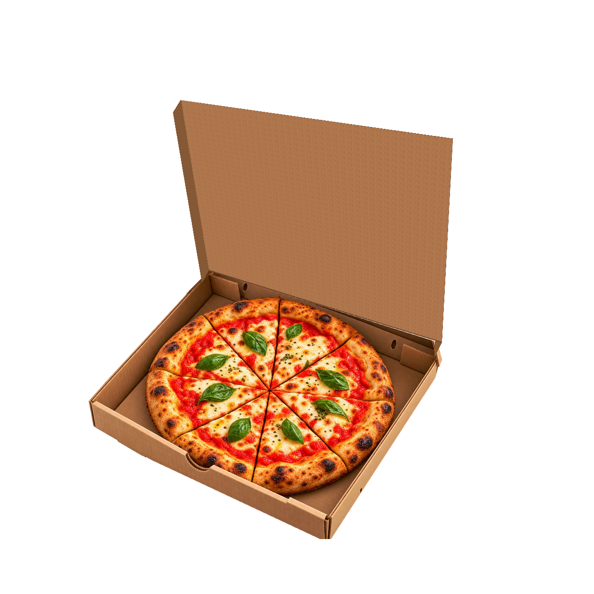
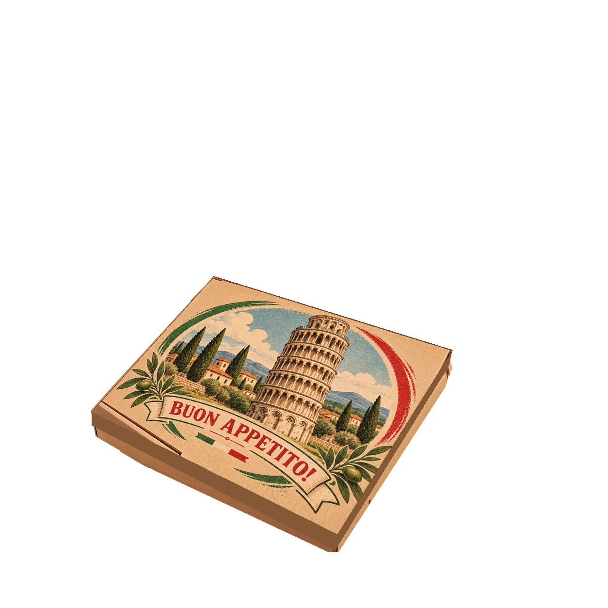
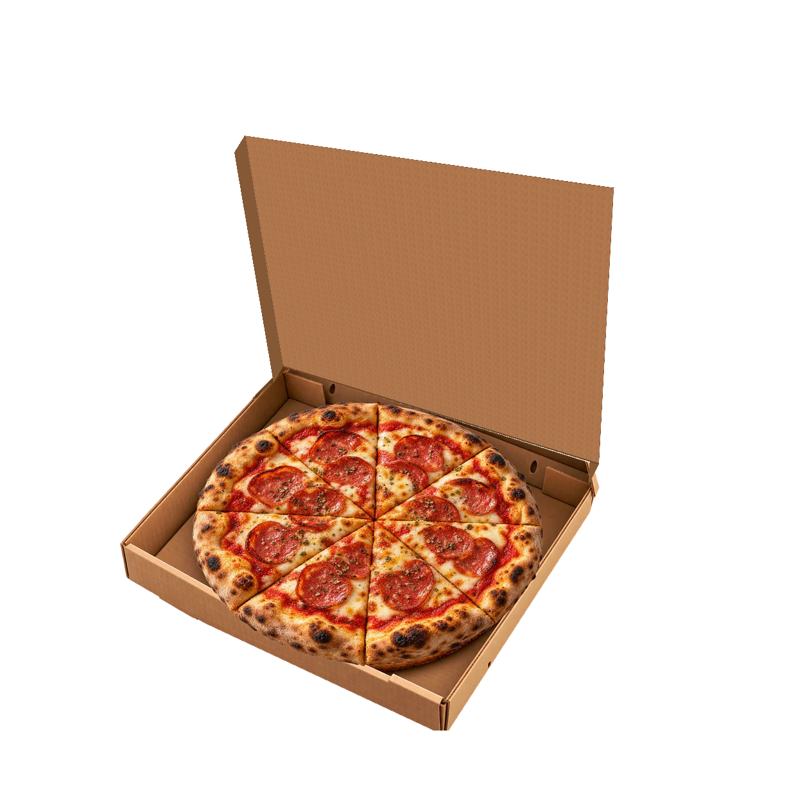
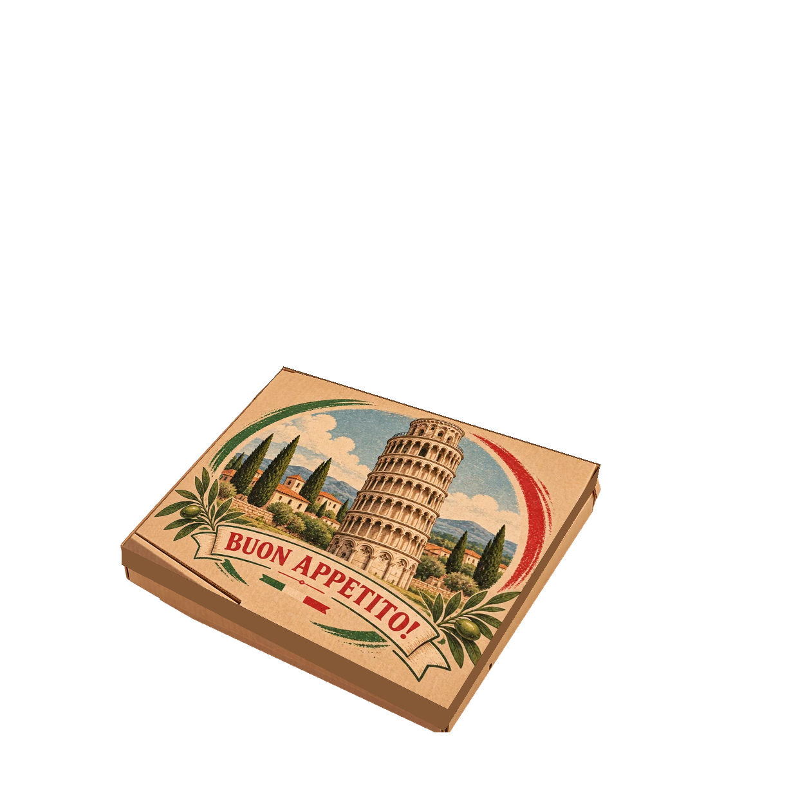
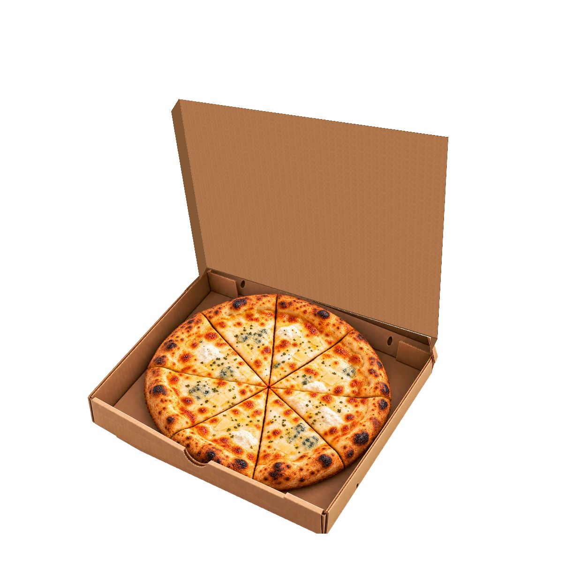
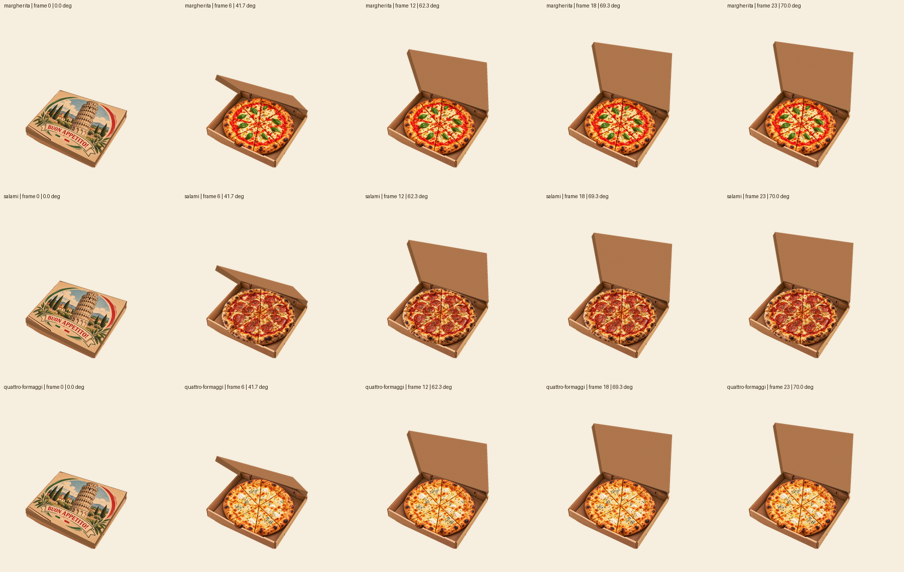

NINO Pisa — review vereist
Goedgekeurde oorspronkelijke illustraties. Technische animatiekandidaat; onafhankelijke Hermes QA en visuele acceptatie staan open. Geen live TOPO-integratie.
Margherita


Salami


Quattro Formaggi


Alle tijdstadia
